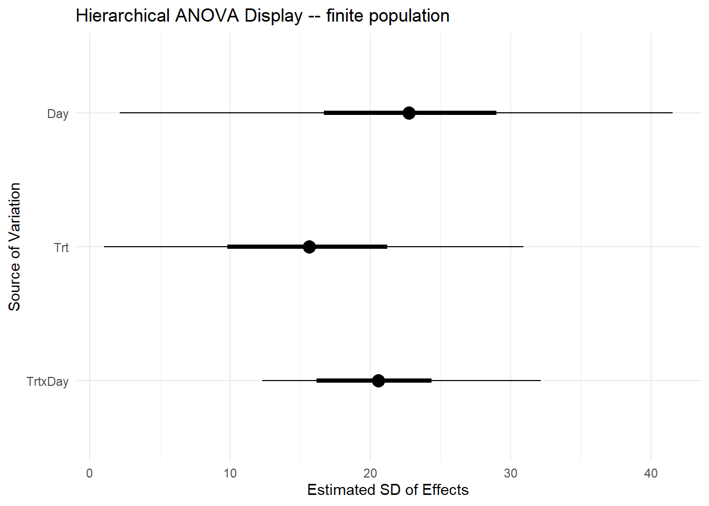
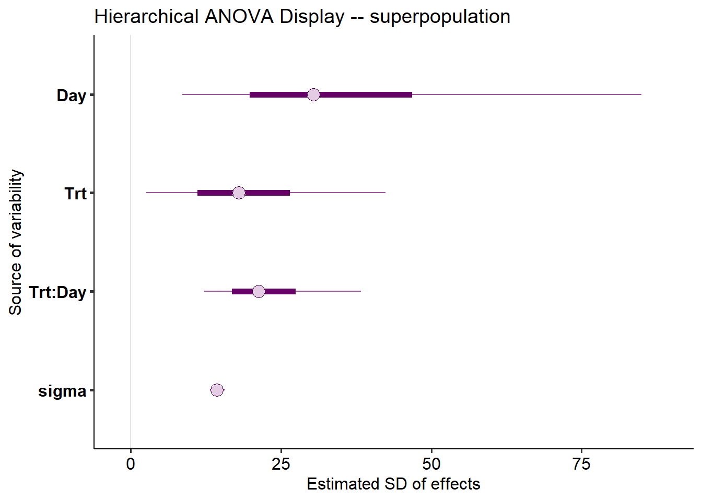

Day 4 Mixed models III – model checking, ANOVA, statistical inference
February 2nd, 2026
4.1 Review
Mixed-effects models combine fixed effects and random effects. Typically, we can define a Gaussian mixed-effects model as
\[\mathbf{y} = \mathbf{X} \boldsymbol{\beta} + \mathbf{Z}\mathbf{u} + \boldsymbol{\varepsilon}, \\ \begin{bmatrix}\mathbf{u} \\ \boldsymbol{\varepsilon} \end{bmatrix} \sim \left( \begin{bmatrix}\boldsymbol{0} \\ \boldsymbol{0} \end{bmatrix}, \begin{bmatrix}\mathbf{G} & \boldsymbol{0} \\ \boldsymbol{0} & \mathbf{R} \end{bmatrix} \right),\]
where \(\mathbf{y}\) is the observed response,
\(\mathbf{X}\) is the matrix with the explanatory variables,
\(\mathbf{Z}\) is the design matrix,
\(\boldsymbol{\beta}\) is the vector containing the fixed-effects parameters,
\(\mathbf{u}\) is the vector containing the random effects parameters,
\(\boldsymbol{\varepsilon}\) is the vector containing the residuals,
\(\mathbf{G}\) is the variance-covariance matrix of the random effects,
and \(\mathbf{R}\) is the variance-covariance matrix of the residuals.
Typically, \(\mathbf{G} = \sigma^2_u \mathbf{I}\) and \(\mathbf{R} = \sigma^2 \mathbf{I}\).
If we do the math, we get that
\[E(\mathbf{y}) = \mathbf{X}\boldsymbol{\beta},\] \[Var(\mathbf{y}) = \mathbf{Z}\mathbf{G}\mathbf{Z}' + \mathbf{R}.\]
Fixed effects versus random effects
| Fixed effects | Random effects | |
|---|---|---|
| Where | Expected value | Variance-covariance matrix |
| Inference | Constant for all groups in the population of study | Differ from group to group |
| Usually used to model | Carefully selected treatments or genotypes | The study design (aka structure in the data, or what is similar to what) |
| Assumptions | \[\hat{\boldsymbol{\beta}} \sim N \left( \boldsymbol{\beta}, (\mathbf{X}^T \mathbf{V}^{-1} \mathbf{X})^{-1} \right) \] | \[u_j \sim N(0, \sigma^2_u)\] |
| Method of estimation | Maximum likelihood, least squares | Restricted maximum likelihood (shrinkage) |
4.2 Model checking and comparison
Important things to keep in mind:
- Statistical models to analyze data generated by designed experiments.
- Models created to explain vs. models created to predict. See Shmueli (2010).
4.4 Simulation-based model-checking
- Goal: to detect systematic differences between the model and observed data.
- See Chapter 8 in Gelman and Hill.
library(lme4)
library(tidyverse)
library(latex2exp)
library(ggpubr)
dat <- read.csv("../data/N_fert.csv")
m1 <- lm(Yield_SY ~ Total_N , data= dat)
dat$residuals <- resid(m1)
dat$yhat <- predict(m1)
theme_set(theme_pubr())y_sim <- simulate(m1, nsim =30, seed = 42) |>
mutate(Total_N = dat$Total_N,
Yield_SY = dat$Yield_SY) |>
pivot_longer(cols = -c(Total_N, Yield_SY))
y_sim |>
ggplot(aes(value))+
geom_histogram()+
geom_histogram(aes(Yield_SY), fill = "gold", alpha = .3)+
facet_wrap(~name)## `stat_bin()` using `bins = 30`. Pick better value with `binwidth`.
## `stat_bin()` using `bins = 30`. Pick better value with `binwidth`.
y_sim |>
ggplot(aes(Total_N, value))+
geom_point()+
geom_point(aes(Total_N, Yield_SY), shape = 21, fill = "gold", alpha = .3)+
facet_wrap(~name)
Discuss the plot above: how are the simulated data compared to the observed data?
4.5 Some useful metrics to compare models
4.5.1 Root mean squared error
- Root mean squared error \(RMSE = \sqrt{\frac{1}{n} \cdot \sum_{i=1}^n(\hat{y}_i-y_i)^2}\)
- In-sample versus out-of-sample RMSE
4.5.2 The coefficient of determination R2
- Usually interpreted as the proportion of the variation in \(y\) that is explained with the variation in \(x\).
- Used as a metric for predictive ability and model fit.
- Can increase when adding more predictors.
The R2 of a given model (and observed data) is calculated as \[R^2 = \frac{MSS}{TSS}= 1 - \frac{RSS}{TSS} = 1- \frac{MSE}{MST},\] where \(RSS\) is the residual sum of squares and \(TSS\) is the total sum o squares, and \(MSE\) is the mean squared error and \(MST\) is the mean squared of the data (i.e., \(y\) versus \(\bar{y}\).
4.5.3 Adjusted R2
The adjusted R2 also penalizes the addition of extra parameters
\[R^2_{adj} = R^2 - (1 - R^2) \frac{p-1}{n-p},\]
where \(R^2\) is the one defined above, \(p\) is the number of parameters and \(n\) is the total number of observations.
4.5.4 Some issues with R2
- Bootstrapped R2
- Anscombe’s quartet
- Out-of-Sample R2: Estimation and Inference
4.5.5 Akaike Information Criterion (AIC)
- Used as a metric for predictive ability and model fit.
- Lower value is better.
- Values are always compared to other models (i.e., there are no general rules about reasonable AIC values).
The AIC of a given model \(M\) and observed data \(\mathbf{y}\) is calculated as
\[AIC_M = 2p - 2\log(\hat{L}),\]
\(p\) is the number of parameters estimated in the model and \(\hat{L}\) is the maximized value of the likelihood function for the model (i.e., \(\hat{L}=p(\mathbf{y}|\hat{\boldsymbol\beta}, M)\)).
4.5.6 Bayesian Information Criterion (BIC)
The BIC of a given model (and observed data) is a variant of AIC and is calculated as
\[BIC = p\log(n) - 2\log(\hat{L}),\]
where \(p\) is the number of parameters estimated in the model, \(n\) is the number of observations, and \(\hat{L}\) is the maximized value of the likelihood function for the model (i.e., \(\hat{L}=p(\mathbf{y}|\hat{\boldsymbol\beta}, M)\)).
4.6 Analysis of variance – ANOVA
- One of the oldest methods to analyze and interpret the data.

Figure 4.1: Sir R.A> Fisher, the father of the ANOVA.
- Helpful for understanding a previously fit model:
- Divide the sources of variability in “batches”.
- Quantify (& test) said sources of variability to see which ones are more relevant to characterize the data.
- Divide the sources of variability in “batches”.
- Some frequent assumptions:
- Linearity
- Normality
- Constant variance
- Discuss independence
4.6.1 This is how you build an ANOVA table
The “What would Fisher do” (WWFD) approach
- Name the sources of variability and classify them into treatment sources of variability and ‘topographical’ (or logistical) sources.
- Assign degrees of freedom to each category.
- Combine both Sources (treatment + topographical) into a single ANOVA table.
- WWFD in the whiteboard
|
|
|
4.6.2 The elements of the ANOVA
| Source | df | SS | MS | EMS |
|---|---|---|---|---|
| Block | \(b-1\) | \[\sigma^2_{\varepsilon}+g\sigma^2_w+tg\sigma^2_d\] | ||
| Fungicide | \(t-1\) | \(SS_{F}\) | \(\frac{SS_{F}}{b-1}\) | \[\sigma^2_{\varepsilon}+g\sigma^2_w+\phi^2(\alpha)\] |
| Error(whole plot) | \((b-1)(t-1)\) | \[\sigma^2_{\varepsilon}+g\sigma^2_w\] | ||
| Genotype | \(g-1\) | \(SS_{G}\) | \(\frac{SS_{G}}{g-1}\) | \[\sigma^2_{\varepsilon}+\phi^2(\gamma)\] |
| \(T \times G\) | \((t-1)(g-1)\) | \(SS_{F \times G}\) | \(\frac{SS_{F \times G}}{(t-1)(g-1)}\) | \[\sigma^2_{\varepsilon}+\phi^2(\alpha \gamma)\] |
| Error(split plot) | \(t(b-1)(g-1)\) | \(SSE\) | \(\frac{SSE}{t(b-1)(g-1)}\) | \[\sigma^2_{\varepsilon}\] |
| Source | df |
|---|---|
| Block | b-1 |
| Fungicide | t-1 |
| Fungicide(Block) | (f-1)*b - (t-1) |
| Genotype | g-1 |
| Fung x Gen | (f-1)(g-1) |
| Pens(Block x Trt) error | (g-1)* f * b - (g-1 + (f-1)(g-1)) |
| Total | N-1 |
4.7 Critiques of ANOVA over the years
- Mostly for normal data (GLMM class tomorrow).
- Low interpretability beyond statistical significance or lack thereof [greater Sums of squares are not necessarily those with higher estimated underlying variance components].
- Complicated specifications for unbalanced data.
4.8 A different take on ANOVA using multilevel modeling
- “ANOVA is still very relevant” – see Gelman (2005).
“The essence of analysis of variance is in the structuring of the coefficients into batches—hence the notation \(\beta^{(m)}_j\) – going beyond the usual linear model formulation that has a single indexing of coefficients \(\beta_j\)”
- Still useful as exploratory data analysis
A different approach
- Use a hierarchical formulation in which each batch of regression coefficients is modeled as a sample from a normal distribution with mean 0 and its own variance \(\sigma^2_m\):
\[\beta^{(m)}_j \sim N(0, \sigma^2_m)\] for \(j = 1,\dots,J_m\) for each batch \(m = 1,\dots,M\), .
- starting point for assessing the relative importance of the effects \(\beta\) in linear models
Note:
- The standard deviation \(\sigma^2_m\) (describing the superpopulation) characterizes the uncertainty for predicting a new coefficient from batch \(m\).
- For that reason, Gelman (2005) proposes using \(s^2_m\) (describing the finite population),
4.8.1 An applied example
The data below were generated by an experiment studying the effect of different feed additives on a pig’s health in two different timepoints. The data were generated under a CRD.
Classic ANOVA
Under the classic CRD, we could analyze the data using a classic two-way ANOVA. Now, other than saying that all treatments have an impact on the response, the ANOVA doesn’t really tell us much.
dat <- read.csv("../data/blood_study_pigs.csv") |>
mutate(Day =as.factor(Day))
m_classic <- lm(Serum_haptoglobin_mg.dL ~ Trt * Day , data = dat)
car::Anova(m_classic, type = 2)## Anova Table (Type II tests)
##
## Response: Serum_haptoglobin_mg.dL
## Sum Sq Df F value Pr(>F)
## Trt 81720 5 80.049 < 2.2e-16 ***
## Day 69495 1 340.369 < 2.2e-16 ***
## Trt:Day 24352 5 23.854 < 2.2e-16 ***
## Residuals 36751 180
## ---
## Signif. codes: 0 '***' 0.001 '**' 0.01 '*' 0.05 '.' 0.1 ' ' 1A multilevel model-based ANOVA
We elaborate this approach to ANOVA under a Bayesian approach, in order to quantify the uncertainty to estimate the variance components.
# get Bayes-specific libraries
library(brms)
library(bayesplot)
# fit the Bayesian model
m_new <- brm(Serum_haptoglobin_mg.dL ~ (1|Trt) + (1|Day) + (1|Trt:Day),
prior =
c(set_prior("student_t(3, 0, 50)", class = "sd", group = "Trt"),
set_prior("student_t(3, 0, 50)", class = "sd", group = "Day"),
set_prior("student_t(3, 0, 50)", class = "sd", group = "Trt:Day")),
backend = "cmdstanr",
iter = 2000,
silent = 2,
data = dat)
# check model diagnostics
bayesplot::mcmc_trace(m_new)
The code below gets the posteriors for the random effects and computes the \(s^2_m\).
# get s2 for Day
re_Day <- as_draws_df(m_new) |>
dplyr::select(contains("r_Day[")) |>
as.matrix()
s_Day <- numeric(nrow(re_Day))
for (i in 1:nrow(re_Day)){
s_Day[i] <- sd(re_Day[i,])
}
# get s2 for Trt
re_Trt <- as_draws_df(m_new) |>
dplyr::select(contains("r_Trt[")) |>
as.matrix()
s_Trt <- numeric(nrow(re_Trt))
for (i in 1:nrow(re_Trt)){
s_Trt[i] <- sd(re_Trt[i,])
}
# get s2 for Trt x Day
re_TrtxDay <- as_draws_df(m_new) |>
dplyr::select(contains("r_Trt:Day")) |>
as.matrix()
s_TrtxDay <- numeric(nrow(re_TrtxDay))
for (i in 1:nrow(re_TrtxDay)){
s_TrtxDay[i] <- sd(re_TrtxDay[i,])
}
# Summarize all s2 results into quantiles
finite_sds <-
data.frame(Trt = s_Trt, Day = s_Day, TrtxDay = s_TrtxDay) |>
rownames_to_column("iter") |>
pivot_longer(cols = Trt:TrtxDay, names_to = "Source") |>
group_by(Source) |>
summarise(s_m_mean = mean(value),
q025 = quantile(value, probs = c(0.025)),
q25 = quantile(value, probs = c(0.25)),
q75 = quantile(value, probs = c(0.75)),
q975 = quantile(value, probs = c(0.975))) ggplot(finite_sds,
aes(x = s_m_mean, y = factor(Source, levels = c("TrtxDay", "Trt", "Day")))) +
geom_point(size = 4) +
geom_segment(aes(x = q025,
xend = q975,
y = Source, yend = Source), linetype = "solid") +
geom_segment(aes(x = q25,
xend = q75,
y = Source, yend = Source),
size = 1.5,
linetype = "solid") +
labs(
title = "Hierarchical ANOVA Display -- finite population",
x = "Estimated SD of Effects",
y = "Source of Variation"
) +
theme_minimal()
m_new_results <- as.matrix(m_new)
colnames(m_new_results) <-
str_replace(colnames(m_new_results), "__Intercept", "")
colnames(m_new_results) <-
str_replace(colnames(m_new_results), "sd_", "")
color_scheme_set("purple")
mcmc_intervals(m_new_results,
pars = c("Day",
"Trt",
"Trt:Day",
"sigma"))+
labs(
title = "Hierarchical ANOVA Display -- superpopulation",
x = "Estimated SD of effects",
y = "Source of variability")
- Discuss interpretation of a classic ANOVA versus this approach (simultaneous vs. not)
- Opportunities & limitations